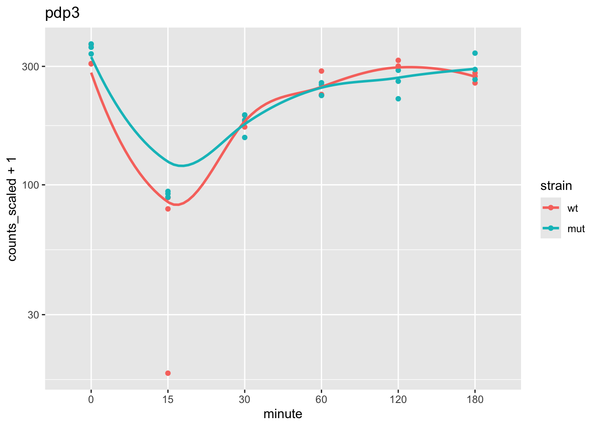

Objective: learn how to run many models (think many linear regressions or many machine learning models) in a tidy framework, by “nesting” the genomic dataset and storing the fitted models as rows of a new column in the nested table.
In the previous chapter, we looked at some basic filtering and plotting operations, with perhaps the most interesting operation being a grouped centering of the gene expression. Here we will explore a special case of tidy-style operations on a genomic dataset, in particular a SummarizedExperiment, where we want to run multiple, similar models across groups of features (or likewise, the same could be done to rows).
For some other references to these types of operations, you can check out:
The “many models” chapter of R for Data Science by Wickham and Grolemund (2017), which introduced the basics of how to run many models in a tidy framework
Given the size of genomic data, and the way in which tidySummarizedExperiment abstracts the link between data (assay) and metadata (rowData and colData), we will consider in this chapter how the speed of the operations may be impacted by our choices in setting up the code. In the end, you may find that a more standard way of running the analyses (e.g. using base R/Bioc) is more efficient, depending on the cost incurred by the nesting operation, which we will describe shortly.
We will work with a Bioconductor experiment package fission which contains a dataset created by Leong et al. (2014)PMC4050258:
Here we integrate high-throughput RNA sequencing and label-free quantitative protein mass spectrometry to investigate global changes in transcript and protein levels in the fission yeast stress response.
The experiment considers fission yeast of two strains, wild-type (WT) and atf21\(\Delta\), but here we will not focus on these two strains but just lump the data together, to increase our sample size for the point of building the models.
We again use tidybulk to filter to abundant genes and scale counts for library size:
library(tidybulk)se <- se %>%keep_abundant(factor_of_interest = strain) %>%scale_abundance()
Warning: The `factor_of_interest` argument of `keep_abundant()` is deprecated as of
tidybulk 2.0.0.
ℹ Please use the `formula_design` argument instead.
ℹ The argument 'factor_of_interest' is deprecated and will be removed in a
future release. Please use the 'design' or 'formula_design' argument instead.
Warning: The `factor_of_interest` argument of `identify_abundant()` is deprecated as of
tidybulk 2.0.0.
ℹ Please use the `formula_design` argument instead.
ℹ The argument 'factor_of_interest' is deprecated and will be removed in a
future release. Please use the 'design' or 'formula_design' argument instead.
ℹ The deprecated feature was likely used in the tidybulk package.
Please report the issue at <https://github.com/stemangiola/tidybulk/issues>.
assayNames(se)
[1] "counts" "counts_scaled"
We make a PCA plot of the log scaled counts, to get a sense for how the samples vary. Note that minute 0 and 180 are similar, as the cells have not yet responded to the stimulus at minute 0. We will later remove these samples for simple modeling.
pca <- se %>%reduce_dimensions(method="PCA")
Getting the 500 most variable genes
Fraction of variance explained by the selected principal components
# A tibble: 2 × 2
`Fraction of variance` PC
<dbl> <int>
1 0.0645 1
2 0.0495 2
tidybulk says: to access the raw results do `metadata(.)$tidybulk$PCA`
We can plot the gene with the most contribution to PC1. Here we will begin working with the data as a tidySE (shortened name for tidySummarizedExperiment):
Warning: `when()` was deprecated in purrr 1.0.0.
ℹ Please use `if` instead.
ℹ The deprecated feature was likely used in the tidySummarizedExperiment
package.
Please report the issue at
<https://github.com/stemangiola/tidySummarizedExperiment/issues>.

Now, let’s consider a hypothetical analysis question: can we predict the minute (quantitatively) using the log gene expression of a genes in a neighborhood on the chromosome. While this is mostly a contrived question, for the purposes of demonstrating nesting of genomic datasets, you could imagine that there might be modules of responsive genes positioned along the chromosome, and that a prediction task is one way to identify genes that are related to an aspect of the experimental design.
The steps will be:
Create centered log scaled counts
Create “blocks” of genes, by tiling the genome and labeling the genes that fall within the same tile
“Nest” the tidySE such that we can operate on the blocks of genes together
Run a series of models, each time predicting the minute variable using the expression of the genes in the block
Evaluate these models (here simply looking at in-sample training error)
“Nesting” a dataset is an operation, similar to group_by, where a variable is used to perform grouped operations. We will specify to nest all the data (columns) besides the grouping variable, such that we end up with a tibble that looks like:
grouping variable
data
value1
RngdSmmE
value2
RngdSmmE
…
…
Hence, for every row of the SummarizedExperiment that has value1 for the grouping variable, we will have a subsetted SummarizedExperiment (“ranged” refers to the face that it is rowRanges).
Let’s start with the first task. We compute logcounts and then center and scale these values. Likewise, we turn the minute variable from a factor into a numeric, and scale from 0 to 1. These changes would help us compare coefficients across gene later.
se <- se %>%mutate(logcounts =log2(counts_scaled +1),logcounts = (logcounts -mean(logcounts))/sd(logcounts))se <- se %>%mutate(time =as.numeric(as.character(minute)) /180)se
For demonstration, we will work with just the first chromosome: I.
For our task of modeling the design using gene expression, in blocks along the genome, we need to create tiles to determine which genes to group together. To do so, we need to know how long the chromosomes are. The original publication states:
Sequencing reads were aligned to the fission yeast genome (PomBase database release 11)
Usually we would look for the length of chromosomes from a source that hosts the reference (e.g. UCSC genome lengths can be obtained using Seqinfo). In this case, I wasn’t able to find information about this particular release, so I just guess the length of the chromosome using the gene with the largest coordinate:
GRanges object with 56 ranges and 1 metadata column:
seqnames ranges strand | tile
<Rle> <IRanges> <Rle> | <integer>
[1] I 1-100000 * | 1
[2] I 100001-200000 * | 2
[3] I 200001-300000 * | 3
[4] I 300001-400000 * | 4
[5] I 400001-500000 * | 5
... ... ... ... . ...
[52] I 5100001-5200000 * | 52
[53] I 5200001-5300000 * | 53
[54] I 5300001-5400000 * | 54
[55] I 5400001-5500000 * | 55
[56] I 5500001-5600000 * | 56
-------
seqinfo: 1 sequence from an unspecified genome; no seqlengths
We now determine which tile the genes fall in (using TSS only, so that genes fall in a single tile). We can add this data back onto the tidySE using a left_join:
# combining the tile information with the SEse <- se %>%left_join(ranges_tiled)
Joining with `by = join_by(.feature)`
Typically we have a little less than 50 genes per tile:
summary(as.vector(table(rowData(se)$tile)))
Min. 1st Qu. Median Mean 3rd Qu. Max.
5.00 44.00 49.00 46.98 51.25 59.00
Next, we want to create a nested table, where tidySE objects are grouped by tile and placed within a column of the table. There are a few choices on how to proceed. One option would be to pivot_wider the tidySE, as in this chunk below:
se %>%filter(.feature %in%rownames(se)[1:5]) %>%select(.sample, strain, time, .feature, logcounts) %>%pivot_wider(names_from = .feature, values_from = logcounts)
tidySummarizedExperiment says: A data frame is returned for independent data analysis.
How else could we have performed the analysis, without doing the nesting operation? Would this have been faster? What other variables would need to be created to keep track of the many models?
What advantages or disadvantages can you think about for the different ways of running multiple models across large genomic datasets?
Friedman, Jerome H., Trevor Hastie, and Rob Tibshirani. 2010. “Regularization Paths for Generalized Linear Models via Coordinate Descent.”Journal of Statistical Software 33 (1): 1–22. https://doi.org/10.18637/jss.v033.i01.
Leong, Hui Sun, Keren Dawson, Chris Wirth, Yaoyong Li, Yvonne Connolly, Duncan L Smith, Caroline R M Wilkinson, and Crispin J Miller. 2014. “A Global Non-Coding RNA System Modulates Fission Yeast Protein Levels in Response to Stress.”Nat. Commun. 5 (1): 3947.
Wickham, Hadley, and Garrett Grolemund. 2017. R for Data Science: Import, Tidy, Transform, Visualize, and Model Data. 1st ed. Paperback; O’Reilly Media. http://r4ds.had.co.nz/.